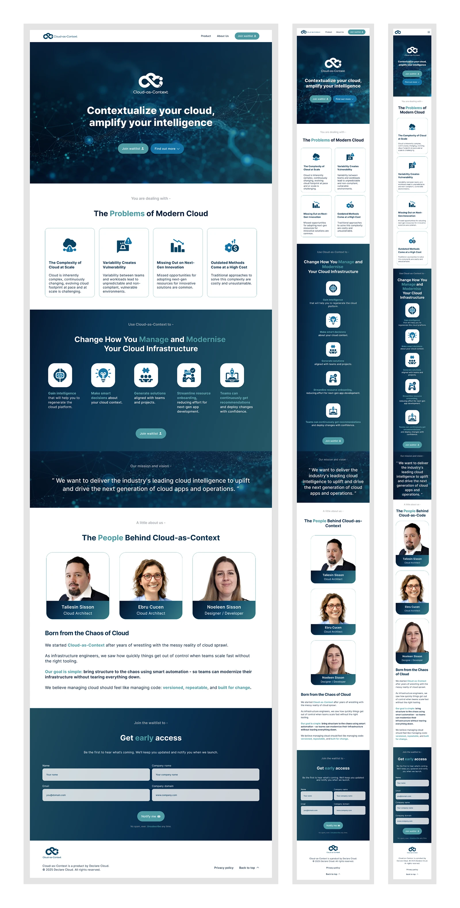
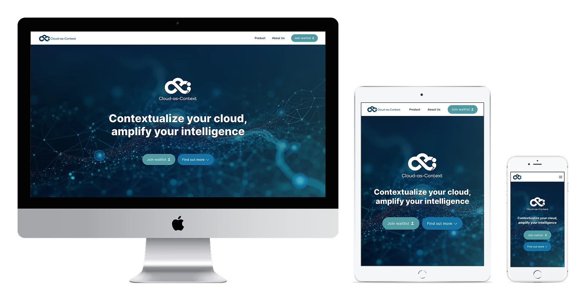
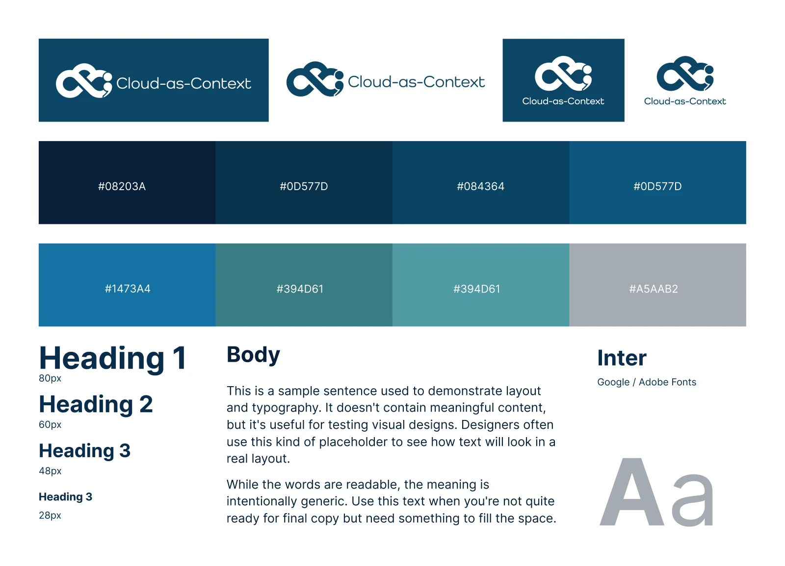
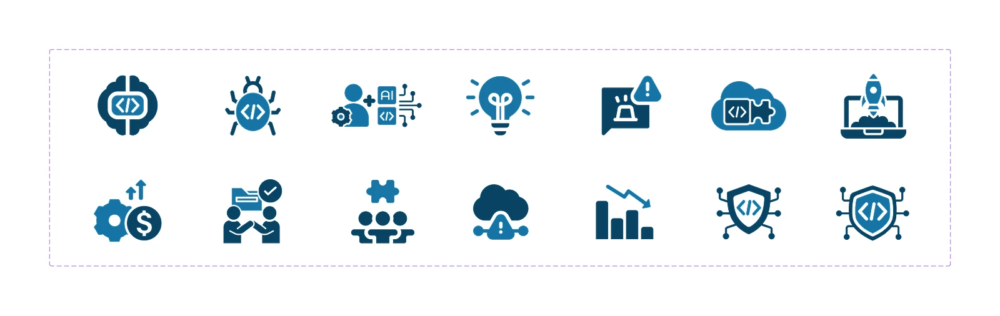

Featured Case Study
Declare Cloud
Brand identity, website design, and front-end development for an early-stage cloud intelligence startup.
Responsive Screens

Device Mockups

Brand Guidelines

Icon System

Description:
As a founding team member at the startup Declare Cloud, I helped build the company’s visual identity and online presence from the ground up. Through its core platform, Cloud-as-Context, Declare Cloud aims to make cloud infrastructure more intelligent and contextual.
I contributed to brand design, web design, and front-end development, creating a cohesive, modern identity that reflected the product’s innovation while building trust with investors and early users.
My Role:
From the early concept stage, I worked closely with the two other founders, both experienced cloud architects, to define the brand strategy, establish the visual direction, and deliver both creative and technical outputs to support product launches and investor engagement.
As part of our three-person founding team, I designed the logo, defined the colour palette, typography, and brand voice, and ensured consistency across all materials — from the website to the investor pitch deck. Together, we delivered a fully responsive, production-ready site and supporting assets in time for the Y Combinator application deadline on 4th August 2025.
Contribution:
- Logo & Branding: Sketched and refined initial logo concepts through multiple iterations until the final design was approved. Established the colour system, typography, and imagery style for a consistent brand presence across digital and print.
- Icons & Imagery: Created a custom icon set in Illustrator to support the Cloud-as-Context product. Designed and enhanced AI-generated hero imagery in Photoshop to match the brand aesthetic.
- Web Design: Produced responsive Figma mockups for desktop, tablet, and mobile. Imported layouts into Vercel v0, refined the generated code, and integrated it into the Next.js project to speed up prototyping.
- Front-End Development: Built the landing page using React, Next.js, Bun, TypeScript, and Tailwind CSS. Implemented a reusable component library and design system for consistency and scalability.
- Workflow & Tooling: Developed inside a Docker container using VS Code and Cursor. Managed version control with TortoiseGit and maintained a structured CI/CD workflow via GitHub, including Prettier/ESLint checks, Jest/Playwright tests, and conventional commits.
- Pitch Deck & Media: Designed the investor pitch deck in Google Slides for brand alignment and edited both the founder introduction and Cloud-as-Context demo videos in Adobe Premiere Pro as part of the Y Combinator submission.
Achievements:
This project established Declare Cloud’s brand identity and online presence, positioning the company as a credible, forward-thinking player in the cloud intelligence space. By combining visual storytelling with strong front-end engineering, I helped move the startup from concept to launch in just a few months.
The result was a cohesive, fully branded website and investor presentation, supported by a modern design system — creating a consistent, polished brand experience across all platforms.